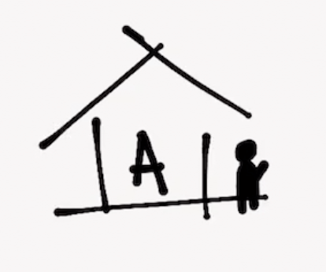
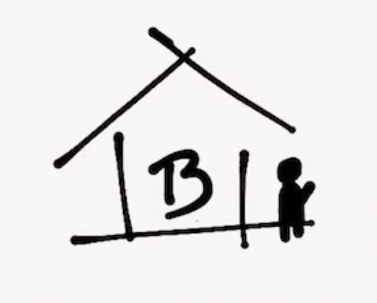
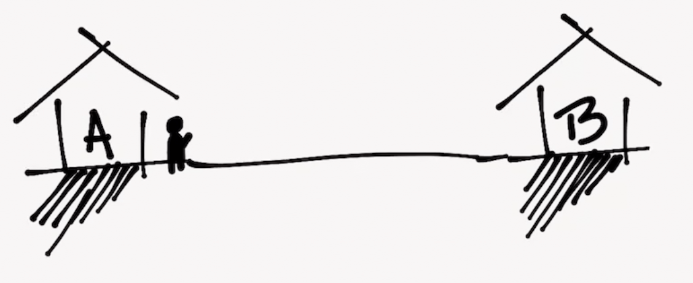
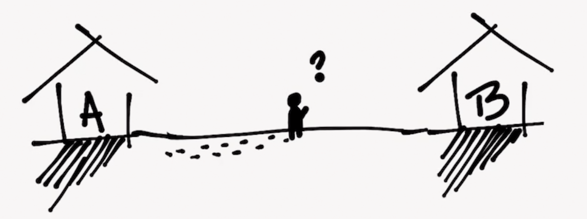
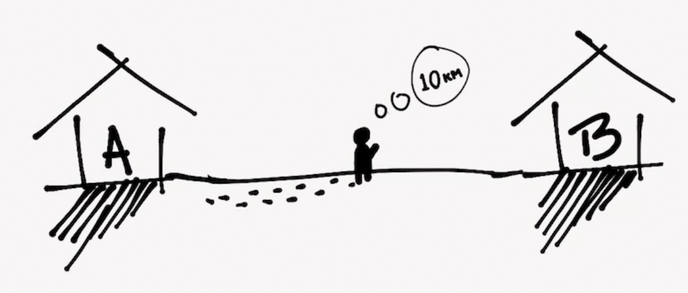
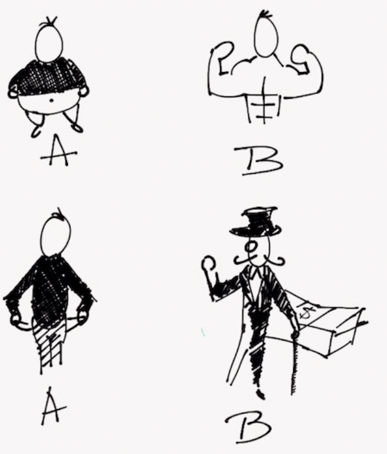
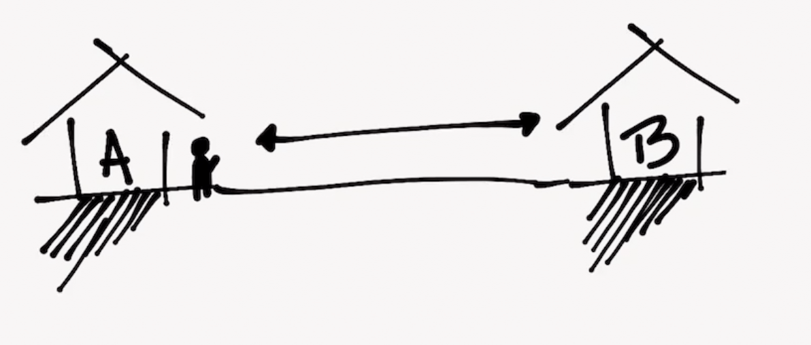

Objectifs numériques

Tu es au point A.

Tu veux être au point B.

A et B sont séparés.

Pour aller à B, il faut marcher.

Tu ne connais pas la distance qui sépare les deux points. Tu as juste une idée de la direction où se trouve B.

Tu peux faire une estimation...

Pour te rendre sur B tu pourrais :
- Partir du point A avec le but unique de te rendre sur B.
- Partir du point A avec le but de marcher 10 Km.
Dans le premier cas, ton attention est posée sur le résultat. Ton esprit, énergie et ressources visent sa résolution, la finalité, la lignée d’arrivée. Ta conscience habite dans l’avenir.
Il s’agit d’un objectif qualitatif : ce qui importe est la qualité du résultat, car dans ta petite tête d’inconformiste tu estimes que « B » est beaucoup mieux que « A » — et donc, qualitativement supérieur —.
L’avenir n’existe pas
Dans la deuxième option, tu te concentres sur le parcours. Ton but est de marcher. Tout simplement.
Chaque kilomètre est une petite réussite, une joie, tu prends donc soin de bien les compter — avec tout l'effort que tu as mis, ça serait bête de se tromper —.
Le fait de compter te permets d'être conscient de ton progrès.
Ta conscience réside dans chaque petit pas.
.
.
.
Tu es présent.
Chaque kilomètre te rapproche de B, même si ce n’était pas ton but principal et que tes estimations puissent être fausses.
Tu as estimé que tu devais marcher 10 km et tu l'as fait. Tu as établi un objectif quantitatif ou numérique.
Un objectif est un désir. Le désir d’être en B au lieu d’en A.

Mais...
Les objectifs non réalisés sont souvent source de frustration, d’anxiété, de douleur.
La relaxation est qui vous êtes. La tension est qui vous pensez que vous devriez être.
Nous souhaitons souvent nous rendre à B au plus vite et en marchant le minimum.
C’est logique, après tout notre cerveau est une machine d'automatismes qui n’aime pas les dépenses énergétiques non nécessaires.
Mais, mauvaise nouvelle...
Il y aura toujours une distance qui sépare A et B.

Il n’existe pas de raccourcis. Si nous souhaitons nous rendre au point B nous devrons toujours franchir cette distance.
C’est inévitable, une loi physique et universelle.
💡 Donc, si...
Il faudra toujours parcourir une distance
Pourqoui ne pas changer notre désir d’arriver pour un désir de marcher ?
Ne serait-ce pas plus sage ?
💡 Et si...
Se projeter en excès dans l'avenir peut nous frustrer et donc nuire à notre bonheur et état d’esprit...
Pourquoi ne pas se donner une quantité de pas à faire et se concentrer et se réjouir de chacun de ces petis pas?
Ne serait-ce pas une meilleure façon de vivre le présent tout en se rapprochant de cet avenir que tu recherches?
Trois possibilités
Si tu entreprends un objectif numérique et que tu fait une estimation de 10 Km, trois situations peuvent se produire :
- Tu avais raison. A et B sont séparés par une distance de 10 Km. Félicitations
- A et B sont plus proches que ce que tu croyais.
- A et B sont plus éloignés que ce que tu croyais.
La dernière situation est la plus probable, mais...
Même si tu te trompes dans tes estimations, tu :
- Auras profité beaucoup plus du voyage
- Seras beaucoup plus présent dans ta propre vie
- Apprendras à mieux calibrer tes estimations
- Auras une vision plus réaliste de tes capacités et limitations
Et surtout — et crois-moi — tu seras beaucoup plus proche du résultat.
Conclusion
Les objectifs numériques ont un potentiel vraiment extraordinaire pour te rapprocher davantage ton avenir souhaité.
Ils favorisent le minimalisme, l’appréciation et le mindfullness ainsi que le dévéloppement de nouvelles — et bonnes — habitudes.
J’utilise depuis quelques mois ces principes avec des très bons résultats. Pour l’instant, et pour que tu aies une idée de comment commencer à appliquer ces principes, je te laisse une image de mes objectifs numériques et leur état actuel :